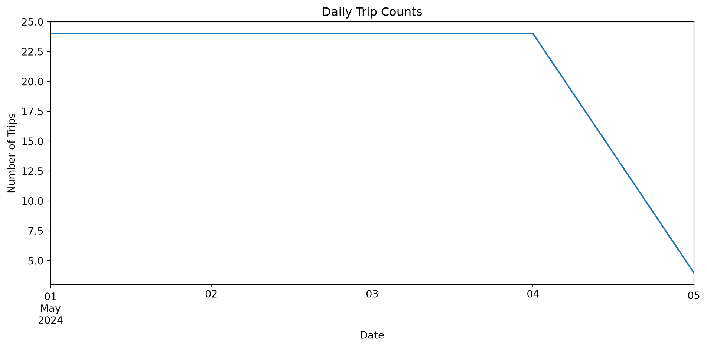
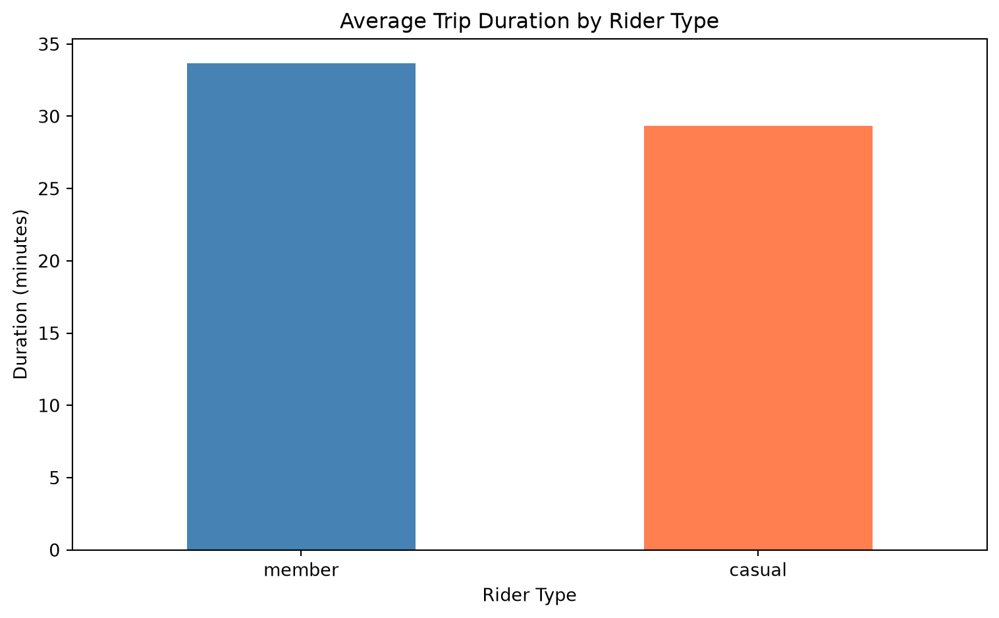
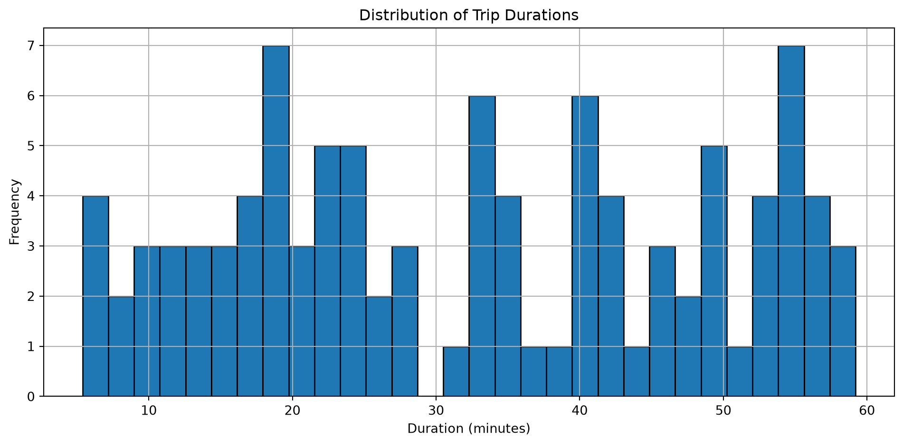
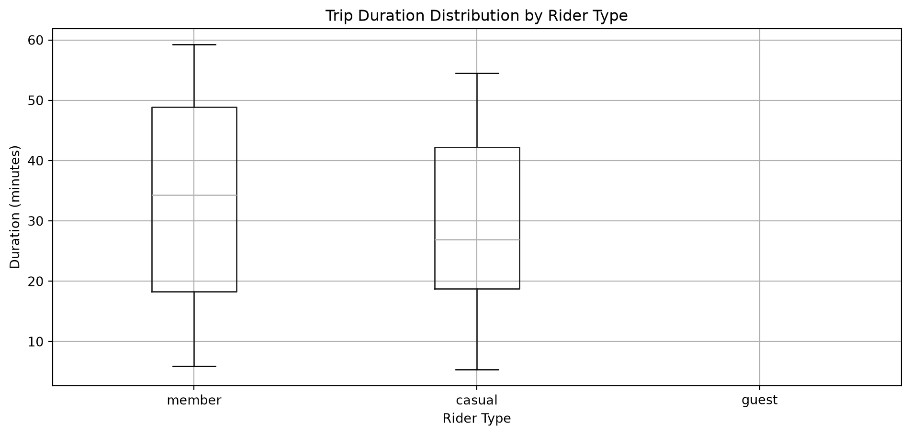

import pandas as pd
import numpy as np
import matplotlib.pyplot as plt
from datetime import datetime, timedelta
import warnings
warnings.filterwarnings('ignore')
# Set display options for better readability
pd.set_option('display.max_columns', None)
pd.set_option('display.width', None)
pd.set_option('display.max_colwidth', 50)Lecture 5 — Data Analysis with Pandas
Background Notes
1. Introduction
Data analysis in Python centers on the pandas library, which provides high-performance, easy-to-use data structures and analysis tools. This lecture uses Chicago’s Divvy bike-share system as a case study to demonstrate how pandas transforms raw data into analytical insights.
The Divvy dataset is pedagogically valuable because it exhibits real-world data characteristics:
- Large scale: May 2024 contains approximately 609,000 trip records
- Structured missingness: Station information is systematically missing for dockless bikes
- Temporal complexity: Datetime parsing and feature extraction
- Categorical variables: Bike types, rider types, stations
- Analytical questions: Usage patterns, temporal trends, user segmentation
Throughout these notes, we focus on the central question: How do members and casual riders use Chicago’s bike-share system differently? This question motivates data loading, cleaning, transformation, aggregation, and visualization operations.
The notes are organized to match the lecture progression but include additional depth on pandas internals, edge cases, and best practices. Code examples use a sample dataset that can be created inline, ensuring all code executes without external dependencies.
1.1 Setup
1.2 Creating Sample Data
For demonstration purposes, we create a realistic sample of Divvy bike-share data:
# Create sample Divvy bike-share data
np.random.seed(42)
n_trips = 100
dates = pd.date_range('2024-05-01', periods=n_trips, freq='1h')
sample_data = {
'ride_id': [f'RIDE{str(i).zfill(6)}' for i in range(n_trips)],
'rideable_type': np.random.choice(
['classic_bike', 'electric_bike', 'electric_scooter'],
size=n_trips,
p=[0.4, 0.5, 0.1]
),
'started_at': dates,
'ended_at': dates + pd.to_timedelta(np.random.uniform(5, 60, n_trips), unit='m'),
'start_station_name': np.random.choice(
['Clark St & Elm St', 'Broadway & Barry Ave', 'Michigan Ave & Oak St',
'State St & Pearson St', None],
size=n_trips,
p=[0.2, 0.2, 0.2, 0.2, 0.2]
),
'start_station_id': None, # Will fill based on station name
'end_station_name': np.random.choice(
['Wells St & Elm St', 'Sedgwick St & North Ave', 'Sheridan Rd & Lawrence Ave',
'State St & Pearson St', None],
size=n_trips,
p=[0.2, 0.2, 0.2, 0.2, 0.2]
),
'end_station_id': None,
'start_lat': np.random.uniform(41.85, 41.95, n_trips),
'start_lng': np.random.uniform(-87.70, -87.60, n_trips),
'end_lat': np.random.uniform(41.85, 41.95, n_trips),
'end_lng': np.random.uniform(-87.70, -87.60, n_trips),
'member_casual': np.random.choice(['member', 'casual'], size=n_trips, p=[0.65, 0.35])
}
# Create DataFrame
df_original = pd.DataFrame(sample_data)
# Make station names more likely to be missing for electric bikes
mask_electric = df_original['rideable_type'].isin(['electric_bike', 'electric_scooter'])
missing_prob = np.where(mask_electric, 0.4, 0.1)
missing_indices = np.random.random(n_trips) < missing_prob
df_original.loc[missing_indices, 'start_station_name'] = None
df_original.loc[missing_indices, 'end_station_name'] = None
# Add some missing end coordinates
missing_coords = np.random.choice(n_trips, size=5, replace=False)
df_original.loc[missing_coords, 'end_lat'] = np.nan
df_original.loc[missing_coords, 'end_lng'] = np.nan
print(f"Created sample dataset: {len(df_original)} rows, {len(df_original.columns)} columns")
print("\nFirst few rows:")
print(df_original.head())Created sample dataset: 100 rows, 13 columns
First few rows:
ride_id rideable_type started_at \
0 RIDE000000 classic_bike 2024-05-01 00:00:00
1 RIDE000001 electric_scooter 2024-05-01 01:00:00
2 RIDE000002 electric_bike 2024-05-01 02:00:00
3 RIDE000003 electric_bike 2024-05-01 03:00:00
4 RIDE000004 classic_bike 2024-05-01 04:00:00
ended_at start_station_name start_station_id \
0 2024-05-01 00:06:43.716312768 State St & Pearson St None
1 2024-05-01 01:40:00.154357170 NaN None
2 2024-05-01 02:22:17.374737552 NaN None
3 2024-05-01 03:32:58.283280846 NaN None
4 2024-05-01 04:54:54.969363954 State St & Pearson St None
end_station_name end_station_id start_lat start_lng end_lat \
0 Wells St & Elm St None 41.860312 -87.630184 41.866894
1 NaN None 41.940255 -87.646390 41.877859
2 NaN None 41.900525 -87.669047 41.867701
3 State St & Pearson St None 41.932646 -87.618620 41.858870
4 State St & Pearson St None 41.882005 -87.631527 41.862064
end_lng member_casual
0 -87.646741 casual
1 -87.694818 member
2 -87.666340 member
3 -87.686559 member
4 -87.693663 member 2. Pandas Data Structures
2.1 Series: One-Dimensional Labeled Arrays
A pandas Series is a one-dimensional array-like object containing values and an associated index. Think of it as a column from a spreadsheet or database table.
# Create a Series from a list
ride_durations = pd.Series([25, 30, 15, 45, 20],
index=['trip_1', 'trip_2', 'trip_3', 'trip_4', 'trip_5'],
name='duration_minutes')
print("Series structure:")
print(ride_durations)
print(f"\nValues: {ride_durations.values}")
print(f"Index: {ride_durations.index}")
print(f"Name: {ride_durations.name}")
print(f"Data type: {ride_durations.dtype}")Series structure:
trip_1 25
trip_2 30
trip_3 15
trip_4 45
trip_5 20
Name: duration_minutes, dtype: int64
Values: [25 30 15 45 20]
Index: Index(['trip_1', 'trip_2', 'trip_3', 'trip_4', 'trip_5'], dtype='str')
Name: duration_minutes
Data type: int642.1.1 Series Operations
Series support vectorized operations similar to NumPy arrays:
# Arithmetic operations
print("Original durations:")
print(ride_durations)
print("\nDurations in hours:")
print(ride_durations / 60)
print("\nFilter durations > 20 minutes:")
print(ride_durations[ride_durations > 20])
print("\nDescriptive statistics:")
print(ride_durations.describe())Original durations:
trip_1 25
trip_2 30
trip_3 15
trip_4 45
trip_5 20
Name: duration_minutes, dtype: int64
Durations in hours:
trip_1 0.416667
trip_2 0.500000
trip_3 0.250000
trip_4 0.750000
trip_5 0.333333
Name: duration_minutes, dtype: float64
Filter durations > 20 minutes:
trip_1 25
trip_2 30
trip_4 45
Name: duration_minutes, dtype: int64
Descriptive statistics:
count 5.000000
mean 27.000000
std 11.510864
min 15.000000
25% 20.000000
50% 25.000000
75% 30.000000
max 45.000000
Name: duration_minutes, dtype: float642.1.2 Series from Dictionary
A common pattern is creating a Series from a dictionary:
# Station trip counts
station_counts = {
'Clark St & Elm St': 45,
'Michigan Ave & Oak St': 38,
'Broadway & Barry Ave': 52,
'State St & Pearson St': 41
}
stations_series = pd.Series(station_counts, name='trip_count')
print(stations_series)
print(f"\nMost popular station: {stations_series.idxmax()} with {stations_series.max()} trips")Clark St & Elm St 45
Michigan Ave & Oak St 38
Broadway & Barry Ave 52
State St & Pearson St 41
Name: trip_count, dtype: int64
Most popular station: Broadway & Barry Ave with 52 trips2.2 DataFrame: Two-Dimensional Labeled Data Structure
A DataFrame is a two-dimensional labeled data structure with columns that can contain different data types. It’s the primary pandas data structure for data analysis.
# Basic DataFrame structure
print("DataFrame shape:", df_original.shape)
print("\nColumn names:")
print(df_original.columns.tolist())
print("\nData types:")
print(df_original.dtypes)
print("\nIndex:")
print(df_original.index)DataFrame shape: (100, 13)
Column names:
['ride_id', 'rideable_type', 'started_at', 'ended_at', 'start_station_name', 'start_station_id', 'end_station_name', 'end_station_id', 'start_lat', 'start_lng', 'end_lat', 'end_lng', 'member_casual']
Data types:
ride_id str
rideable_type str
started_at datetime64[us]
ended_at datetime64[ns]
start_station_name str
start_station_id object
end_station_name str
end_station_id object
start_lat float64
start_lng float64
end_lat float64
end_lng float64
member_casual str
dtype: object
Index:
RangeIndex(start=0, stop=100, step=1)2.2.1 DataFrame Construction
Multiple ways to construct DataFrames:
# From dictionary of lists
simple_df = pd.DataFrame({
'bike_type': ['classic', 'electric', 'classic'],
'duration': [25, 30, 20],
'rider_type': ['member', 'casual', 'member']
})
print("From dictionary:")
print(simple_df)
# From list of dictionaries
trips = [
{'bike_type': 'classic', 'duration': 25, 'rider_type': 'member'},
{'bike_type': 'electric', 'duration': 30, 'rider_type': 'casual'},
{'bike_type': 'classic', 'duration': 20, 'rider_type': 'member'}
]
trips_df = pd.DataFrame(trips)
print("\nFrom list of dictionaries:")
print(trips_df)From dictionary:
bike_type duration rider_type
0 classic 25 member
1 electric 30 casual
2 classic 20 member
From list of dictionaries:
bike_type duration rider_type
0 classic 25 member
1 electric 30 casual
2 classic 20 member2.2.2 DataFrame Attributes
Important DataFrame attributes:
print(f"Number of rows: {len(df_original)}")
print(f"Number of columns: {len(df_original.columns)}")
print(f"Shape (rows, cols): {df_original.shape}")
print(f"Size (total elements): {df_original.size}")
print(f"Memory usage:\n{df_original.memory_usage(deep=True)}")Number of rows: 100
Number of columns: 13
Shape (rows, cols): (100, 13)
Size (total elements): 1300
Memory usage:
Index 132
ride_id 5900
rideable_type 6181
started_at 800
ended_at 800
start_station_name 5151
start_station_id 2400
end_station_name 5297
end_station_id 2400
start_lat 800
start_lng 800
end_lat 800
end_lng 800
member_casual 5500
dtype: int643. Indexing and Selection
3.1 Column Selection
Selecting columns is fundamental to DataFrame operations:
# Single column returns a Series
ride_types = df_original['rideable_type']
print("Type:", type(ride_types))
print("\nFirst 5 values:")
print(ride_types.head())
# Multiple columns returns a DataFrame
location_data = df_original[['start_lat', 'start_lng', 'end_lat', 'end_lng']]
print("\nLocation data shape:", location_data.shape)
print(location_data.head())Type: <class 'pandas.Series'>
First 5 values:
0 classic_bike
1 electric_scooter
2 electric_bike
3 electric_bike
4 classic_bike
Name: rideable_type, dtype: str
Location data shape: (100, 4)
start_lat start_lng end_lat end_lng
0 41.860312 -87.630184 41.866894 -87.646741
1 41.940255 -87.646390 41.877859 -87.694818
2 41.900525 -87.669047 41.867701 -87.666340
3 41.932646 -87.618620 41.858870 -87.686559
4 41.882005 -87.631527 41.862064 -87.6936633.1.1 Column Selection Edge Cases
# Selecting non-existent column raises KeyError
try:
df_original['nonexistent_column']
except KeyError as e:
print(f"KeyError: {e}")
# Selecting with list of one column returns DataFrame
single_col_df = df_original[['ride_id']]
print(f"\nType of single column in list: {type(single_col_df)}")
# Attribute-style access (only for valid Python identifiers)
member_status = df_original.member_casual
print(f"\nAttribute access works: {type(member_status)}")KeyError: 'nonexistent_column'
Type of single column in list: <class 'pandas.DataFrame'>
Attribute access works: <class 'pandas.Series'>3.2 Row Selection with loc and iloc
Pandas provides two primary indexers for row selection:
- loc: Label-based indexing
- iloc: Integer position-based indexing
# iloc: integer position
print("First 3 rows using iloc:")
print(df_original.iloc[0:3][['ride_id', 'rideable_type', 'member_casual']])
# loc: label-based (here using default integer index)
print("\nRows 0-2 using loc:")
print(df_original.loc[0:2, ['ride_id', 'rideable_type', 'member_casual']])
# Difference: iloc excludes end, loc includes end with integer labels
print("\nNote: iloc[0:3] gets 3 rows, loc[0:2] gets 3 rows (0, 1, 2)")First 3 rows using iloc:
ride_id rideable_type member_casual
0 RIDE000000 classic_bike casual
1 RIDE000001 electric_scooter member
2 RIDE000002 electric_bike member
Rows 0-2 using loc:
ride_id rideable_type member_casual
0 RIDE000000 classic_bike casual
1 RIDE000001 electric_scooter member
2 RIDE000002 electric_bike member
Note: iloc[0:3] gets 3 rows, loc[0:2] gets 3 rows (0, 1, 2)3.2.1 Boolean Indexing
Powerful filtering using boolean conditions:
# Create working copy
df = df_original.copy()
# Simple boolean mask
casual_riders = df[df['member_casual'] == 'casual']
print(f"Casual rider trips: {len(casual_riders)}")
# Multiple conditions with & (and) and | (or)
electric_members = df[(df['rideable_type'] == 'electric_bike') &
(df['member_casual'] == 'member')]
print(f"\nElectric bike member trips: {len(electric_members)}")
# Using isin() for multiple values
classic_or_electric = df[df['rideable_type'].isin(['classic_bike', 'electric_bike'])]
print(f"\nClassic or electric bikes: {len(classic_or_electric)}")Casual rider trips: 30
Electric bike member trips: 30
Classic or electric bikes: 913.2.2 Advanced Selection
Combining row and column selection:
# Select specific rows and columns
subset = df.loc[df['member_casual'] == 'member',
['ride_id', 'rideable_type', 'started_at']]
print("Member trips with selected columns:")
print(subset.head())
# Using iloc with boolean array
member_mask = df['member_casual'] == 'member'
subset_iloc = df.iloc[member_mask.values, [0, 1, 2]]
print("\nSame selection using iloc with boolean array:")
print(subset_iloc.head())Member trips with selected columns:
ride_id rideable_type started_at
1 RIDE000001 electric_scooter 2024-05-01 01:00:00
2 RIDE000002 electric_bike 2024-05-01 02:00:00
3 RIDE000003 electric_bike 2024-05-01 03:00:00
4 RIDE000004 classic_bike 2024-05-01 04:00:00
8 RIDE000008 electric_bike 2024-05-01 08:00:00
Same selection using iloc with boolean array:
ride_id rideable_type started_at
1 RIDE000001 electric_scooter 2024-05-01 01:00:00
2 RIDE000002 electric_bike 2024-05-01 02:00:00
3 RIDE000003 electric_bike 2024-05-01 03:00:00
4 RIDE000004 classic_bike 2024-05-01 04:00:00
8 RIDE000008 electric_bike 2024-05-01 08:00:003.3 Setting Values
Modifying DataFrame values:
# Create a copy to modify
df_modified = df.copy()
# Set single value
df_modified.loc[0, 'member_casual'] = 'updated_value'
# Set multiple values
df_modified.loc[df_modified['rideable_type'] == 'electric_scooter', 'rideable_type'] = 'electric_bike'
print("Modified electric_scooter to electric_bike:")
print(df_modified['rideable_type'].value_counts())
# Using assignment with boolean indexing
df_modified.loc[df_modified['member_casual'] == 'updated_value', 'member_casual'] = 'member'Modified electric_scooter to electric_bike:
rideable_type
electric_bike 54
classic_bike 46
Name: count, dtype: int644. Data Cleaning and Preparation
4.1 Handling Missing Data
Real-world data contains missing values. Pandas represents them as NaN (Not a Number) for numeric data or None for object data.
# Identify missing values
print("Missing values per column:")
print(df.isnull().sum())
print("\nPercentage missing per column:")
print((df.isnull().sum() / len(df) * 100).round(2))
# Identify rows with any missing values
rows_with_missing = df[df.isnull().any(axis=1)]
print(f"\nRows with any missing data: {len(rows_with_missing)}")Missing values per column:
ride_id 0
rideable_type 0
started_at 0
ended_at 0
start_station_name 47
start_station_id 100
end_station_name 45
end_station_id 100
start_lat 0
start_lng 0
end_lat 5
end_lng 5
member_casual 0
dtype: int64
Percentage missing per column:
ride_id 0.0
rideable_type 0.0
started_at 0.0
ended_at 0.0
start_station_name 47.0
start_station_id 100.0
end_station_name 45.0
end_station_id 100.0
start_lat 0.0
start_lng 0.0
end_lat 5.0
end_lng 5.0
member_casual 0.0
dtype: float64
Rows with any missing data: 1004.1.1 Analyzing Missingness Patterns
Understanding why data is missing is crucial:
# Analyze missingness by bike type
missing_by_type = df.groupby('rideable_type').agg({
'start_station_name': lambda x: x.isnull().sum(),
'end_station_name': lambda x: x.isnull().sum(),
'ride_id': 'count'
})
missing_by_type.columns = ['Missing Start', 'Missing End', 'Total']
missing_by_type['Pct Missing Start'] = (
100 * missing_by_type['Missing Start'] / missing_by_type['Total']
).round(1)
print("Missingness pattern by bike type:")
print(missing_by_type)
print("\nObservation: Dockless bikes (electric) have more missing station data")Missingness pattern by bike type:
Missing Start Missing End Total Pct Missing Start
rideable_type
classic_bike 15 14 46 32.6
electric_bike 27 26 45 60.0
electric_scooter 5 5 9 55.6
Observation: Dockless bikes (electric) have more missing station data4.1.2 Strategies for Missing Data
Different strategies for different contexts:
# Strategy 1: Drop rows with missing values
df_dropped = df.dropna(subset=['start_station_name'])
print(f"Original rows: {len(df)}, After dropping: {len(df_dropped)}")
# Strategy 2: Fill with placeholder
df_filled = df.copy()
df_filled['start_station_name'] = df_filled['start_station_name'].fillna('Unknown')
print(f"\nRows with 'Unknown' start station: {(df_filled['start_station_name'] == 'Unknown').sum()}")
# Strategy 3: Forward fill (for time series)
df_ffill = df.copy()
df_ffill['start_station_name'] = df_ffill['start_station_name'].ffill()
# Strategy 4: Fill with aggregate value
mean_start_lat = df['start_lat'].mean()
df_filled_mean = df.copy()
df_filled_mean['start_lat'] = df_filled_mean['start_lat'].fillna(mean_start_lat)Original rows: 100, After dropping: 53
Rows with 'Unknown' start station: 474.1.3 Intelligent Missing Data Handling
For the Divvy dataset, we recognize that missing station names for electric bikes is meaningful:
# Create a flag for dockless trips
df['is_dockless'] = df['start_station_name'].isnull() & df['end_station_name'].isnull()
print("Trip categorization:")
print(df['is_dockless'].value_counts())
# Analyze characteristics of dockless trips
print("\nDockless trips by bike type:")
print(df[df['is_dockless']]['rideable_type'].value_counts())
print("\nDockless trips by rider type:")
print(df[df['is_dockless']]['member_casual'].value_counts())Trip categorization:
is_dockless
False 68
True 32
Name: count, dtype: int64
Dockless trips by bike type:
rideable_type
electric_bike 21
classic_bike 6
electric_scooter 5
Name: count, dtype: int64
Dockless trips by rider type:
member_casual
member 23
casual 9
Name: count, dtype: int644.2 Data Type Conversions
Correct data types are essential for proper analysis:
# Check current data types
print("Current data types:")
print(df.dtypes)
# Convert datetime columns (if they're strings)
if df['started_at'].dtype == 'object':
df['started_at'] = pd.to_datetime(df['started_at'])
df['ended_at'] = pd.to_datetime(df['ended_at'])
print("\nAfter datetime conversion:")
print(df[['started_at', 'ended_at']].dtypes)
# Convert to categorical for memory efficiency
df['member_casual'] = df['member_casual'].astype('category')
df['rideable_type'] = df['rideable_type'].astype('category')
print("\nAfter categorical conversion:")
print(df[['member_casual', 'rideable_type']].dtypes)Current data types:
ride_id str
rideable_type str
started_at datetime64[us]
ended_at datetime64[ns]
start_station_name str
start_station_id object
end_station_name str
end_station_id object
start_lat float64
start_lng float64
end_lat float64
end_lng float64
member_casual str
is_dockless bool
dtype: object
After datetime conversion:
started_at datetime64[us]
ended_at datetime64[ns]
dtype: object
After categorical conversion:
member_casual category
rideable_type category
dtype: object4.2.1 Memory Optimization
Categorical types can significantly reduce memory usage:
# Compare memory usage
df_original_memory = df_original.memory_usage(deep=True).sum()
df_optimized_memory = df.memory_usage(deep=True).sum()
print(f"Original memory: {df_original_memory:,} bytes")
print(f"Optimized memory: {df_optimized_memory:,} bytes")
print(f"Reduction: {(1 - df_optimized_memory/df_original_memory)*100:.1f}%")Original memory: 37,761 bytes
Optimized memory: 26,678 bytes
Reduction: 29.4%4.3 Duplicate Detection and Removal
# Check for duplicate ride IDs
duplicate_ids = df['ride_id'].duplicated().sum()
print(f"Duplicate ride IDs: {duplicate_ids}")
# Check for duplicate rows (all columns)
duplicate_rows = df.duplicated().sum()
print(f"Duplicate rows (all columns): {duplicate_rows}")
# Find duplicates based on subset of columns
duplicate_times = df.duplicated(subset=['started_at', 'start_lat', 'start_lng']).sum()
print(f"Duplicate start time/location combinations: {duplicate_times}")
# Remove duplicates
df_unique = df.drop_duplicates(subset=['ride_id'])
print(f"\nRows after removing duplicate ride IDs: {len(df_unique)}")Duplicate ride IDs: 0
Duplicate rows (all columns): 0
Duplicate start time/location combinations: 0
Rows after removing duplicate ride IDs: 1005. DateTime Operations
5.1 DateTime Parsing and Extraction
Working with temporal data is central to time-series analysis:
# Ensure datetime types
df['started_at'] = pd.to_datetime(df['started_at'])
df['ended_at'] = pd.to_datetime(df['ended_at'])
# Extract temporal components
df['hour'] = df['started_at'].dt.hour
df['day_of_week'] = df['started_at'].dt.dayofweek # Monday=0, Sunday=6
df['day_name'] = df['started_at'].dt.day_name()
df['month'] = df['started_at'].dt.month
df['date'] = df['started_at'].dt.date
df['is_weekend'] = df['day_of_week'] >= 5
print("Temporal features:")
print(df[['started_at', 'hour', 'day_of_week', 'day_name', 'is_weekend']].head())Temporal features:
started_at hour day_of_week day_name is_weekend
0 2024-05-01 00:00:00 0 2 Wednesday False
1 2024-05-01 01:00:00 1 2 Wednesday False
2 2024-05-01 02:00:00 2 2 Wednesday False
3 2024-05-01 03:00:00 3 2 Wednesday False
4 2024-05-01 04:00:00 4 2 Wednesday False5.1.1 Time Differences
Calculate duration and intervals:
# Calculate trip duration
df['duration_minutes'] = (df['ended_at'] - df['started_at']).dt.total_seconds() / 60
print("Duration statistics:")
print(df['duration_minutes'].describe())
# Categorize duration
df['duration_category'] = pd.cut(
df['duration_minutes'],
bins=[0, 10, 30, 60, np.inf],
labels=['Short', 'Medium', 'Long', 'Very Long']
)
print("\nTrip duration distribution:")
print(df['duration_category'].value_counts().sort_index())Duration statistics:
count 100.000000
mean 32.380745
std 16.121119
min 5.382367
25% 18.310249
50% 32.809367
75% 47.140098
max 59.210775
Name: duration_minutes, dtype: float64
Trip duration distribution:
duration_category
Short 8
Medium 39
Long 53
Very Long 0
Name: count, dtype: int645.1.2 Time-Based Filtering
# Filter by time of day
morning_rush = df[(df['hour'] >= 7) & (df['hour'] <= 9)]
print(f"Morning rush hour trips (7-9am): {len(morning_rush)}")
# Filter by day of week
weekend_trips = df[df['is_weekend']]
print(f"Weekend trips: {len(weekend_trips)}")
# Filter by date range
may_first_week = df[df['started_at'] < '2024-05-08']
print(f"First week of May trips: {len(may_first_week)}")Morning rush hour trips (7-9am): 12
Weekend trips: 28
First week of May trips: 1005.1.3 Time-Based Resampling
For time-series analysis:
# Set datetime as index for resampling
df_indexed = df.set_index('started_at').sort_index()
# Resample to hourly counts
hourly_trips = df_indexed.resample('h').size()
print("Trips per hour (first 24 hours):")
print(hourly_trips.head(24))
# Daily aggregation
daily_stats = df_indexed.resample('D').agg({
'ride_id': 'count',
'duration_minutes': 'mean'
})
daily_stats.columns = ['trip_count', 'avg_duration']
print("\nDaily statistics:")
print(daily_stats.head())Trips per hour (first 24 hours):
started_at
2024-05-01 00:00:00 1
2024-05-01 01:00:00 1
2024-05-01 02:00:00 1
2024-05-01 03:00:00 1
2024-05-01 04:00:00 1
2024-05-01 05:00:00 1
2024-05-01 06:00:00 1
2024-05-01 07:00:00 1
2024-05-01 08:00:00 1
2024-05-01 09:00:00 1
2024-05-01 10:00:00 1
2024-05-01 11:00:00 1
2024-05-01 12:00:00 1
2024-05-01 13:00:00 1
2024-05-01 14:00:00 1
2024-05-01 15:00:00 1
2024-05-01 16:00:00 1
2024-05-01 17:00:00 1
2024-05-01 18:00:00 1
2024-05-01 19:00:00 1
2024-05-01 20:00:00 1
2024-05-01 21:00:00 1
2024-05-01 22:00:00 1
2024-05-01 23:00:00 1
Freq: h, dtype: int64
Daily statistics:
trip_count avg_duration
started_at
2024-05-01 24 33.340406
2024-05-02 24 30.708256
2024-05-03 24 29.446858
2024-05-04 24 33.051269
2024-05-05 4 50.2378846. Creating Derived Variables
6.1 Arithmetic Operations
Create new columns through calculations:
# Calculate approximate distance (simplified)
df['lat_diff'] = abs(df['end_lat'] - df['start_lat'])
df['lng_diff'] = abs(df['end_lng'] - df['start_lng'])
df['approx_distance'] = np.sqrt(df['lat_diff']**2 + df['lng_diff']**2)
print("Distance statistics:")
print(df['approx_distance'].describe())
# Calculate average speed (distance/time)
df['avg_speed'] = df['approx_distance'] / (df['duration_minutes'] / 60)
df['avg_speed'] = df['avg_speed'].replace([np.inf, -np.inf], np.nan)
print("\nAverage speed (units per hour):")
print(df['avg_speed'].describe())Distance statistics:
count 95.000000
mean 0.050760
std 0.025949
min 0.004444
25% 0.030838
50% 0.049562
75% 0.068362
max 0.106167
Name: approx_distance, dtype: float64
Average speed (units per hour):
count 95.000000
mean 0.131765
std 0.114164
min 0.005007
25% 0.058586
50% 0.090605
75% 0.167014
max 0.552050
Name: avg_speed, dtype: float646.2 Conditional Variables
Use np.where or pd.cut for conditional logic:
# Binary classification with np.where
df['is_long_trip'] = np.where(df['duration_minutes'] > 30, True, False)
print("Long trip distribution:")
print(df['is_long_trip'].value_counts())
# Multiple conditions with np.select
conditions = [
(df['hour'] >= 6) & (df['hour'] < 12),
(df['hour'] >= 12) & (df['hour'] < 18),
(df['hour'] >= 18) & (df['hour'] < 24),
]
choices = ['Morning', 'Afternoon', 'Evening']
df['time_of_day'] = np.select(conditions, choices, default='Night')
print("\nTime of day distribution:")
print(df['time_of_day'].value_counts())Long trip distribution:
is_long_trip
True 53
False 47
Name: count, dtype: int64
Time of day distribution:
time_of_day
Night 28
Morning 24
Afternoon 24
Evening 24
Name: count, dtype: int646.3 String Operations
Pandas provides vectorized string operations:
# String methods on Series
df['station_clean'] = df['start_station_name'].str.replace(' & ', ' and ', regex=False)
df['station_upper'] = df['start_station_name'].str.upper()
df['has_avenue'] = df['start_station_name'].str.contains('Ave', na=False)
print("String operations:")
print(df[['start_station_name', 'station_clean', 'has_avenue']].head(10))
# Extract patterns
df['first_word'] = df['start_station_name'].str.split(' ').str[0]
print("\nFirst word of station names:")
print(df['first_word'].value_counts().head())String operations:
start_station_name station_clean has_avenue
0 State St & Pearson St State St and Pearson St False
1 NaN NaN False
2 NaN NaN False
3 NaN NaN False
4 State St & Pearson St State St and Pearson St False
5 Clark St & Elm St Clark St and Elm St False
6 Clark St & Elm St Clark St and Elm St False
7 NaN NaN False
8 NaN NaN False
9 NaN NaN False
First word of station names:
first_word
Broadway 15
State 14
Clark 12
Michigan 12
Name: count, dtype: int647. Grouping and Aggregation
7.1 GroupBy Basics
The split-apply-combine pattern is fundamental to data analysis:
# Group by single column
by_rider_type = df.groupby('member_casual')['duration_minutes'].mean()
print("Average duration by rider type:")
print(by_rider_type)
# Multiple aggregations
rider_stats = df.groupby('member_casual').agg({
'ride_id': 'count',
'duration_minutes': ['mean', 'median', 'std'],
'is_long_trip': 'sum'
})
print("\nComprehensive rider statistics:")
print(rider_stats)Average duration by rider type:
member_casual
casual 29.340132
member 33.683865
Name: duration_minutes, dtype: float64
Comprehensive rider statistics:
ride_id duration_minutes is_long_trip
count mean median std sum
member_casual
casual 30 29.340132 26.920752 15.498434 13
member 70 33.683865 34.299195 16.315320 407.1.1 GroupBy with Multiple Keys
# Group by multiple columns
type_rider_stats = df.groupby(['rideable_type', 'member_casual']).agg({
'ride_id': 'count',
'duration_minutes': 'mean'
}).round(2)
print("Statistics by bike type and rider type:")
print(type_rider_stats)
# Unstack for better readability
print("\nUnstacked view:")
print(type_rider_stats.unstack(fill_value=0))Statistics by bike type and rider type:
ride_id duration_minutes
rideable_type member_casual
classic_bike casual 12 23.73
member 34 36.00
electric_bike casual 15 34.83
member 30 30.91
electric_scooter casual 3 24.30
member 6 34.44
Unstacked view:
ride_id duration_minutes
member_casual casual member casual member
rideable_type
classic_bike 12 34 23.73 36.00
electric_bike 15 30 34.83 30.91
electric_scooter 3 6 24.30 34.447.1.2 Custom Aggregation Functions
# Define custom function
def duration_range(series):
"""Calculate range of duration values"""
return series.max() - series.min()
# Apply custom function
custom_stats = df.groupby('member_casual').agg({
'duration_minutes': [duration_range, 'mean', 'count']
})
print("Custom aggregation:")
print(custom_stats)
# Lambda functions
lambda_stats = df.groupby('rideable_type').agg({
'duration_minutes': [
('range', lambda x: x.max() - x.min()),
('cv', lambda x: x.std() / x.mean()) # coefficient of variation
]
}).round(3)
print("\nLambda aggregations:")
print(lambda_stats)Custom aggregation:
duration_minutes
duration_range mean count
member_casual
casual 49.140626 29.340132 30
member 53.298444 33.683865 70
Lambda aggregations:
duration_minutes
range cv
rideable_type
classic_bike 52.022 0.494
electric_bike 53.828 0.504
electric_scooter 43.891 0.5457.2 Transform and Filter
Beyond aggregation, groupby supports transform and filter:
# Transform: create group-level statistics for each row
df['group_mean_duration'] = df.groupby('member_casual')['duration_minutes'].transform('mean')
df['duration_vs_group'] = df['duration_minutes'] - df['group_mean_duration']
print("Duration compared to group mean:")
print(df[['member_casual', 'duration_minutes', 'group_mean_duration',
'duration_vs_group']].head())
# Filter: keep only groups meeting criteria
long_duration_groups = df.groupby('start_station_name').filter(
lambda x: x['duration_minutes'].mean() > 25
)
print(f"\nStations with average duration > 25 minutes: {long_duration_groups['start_station_name'].nunique()}")Duration compared to group mean:
member_casual duration_minutes group_mean_duration duration_vs_group
0 casual 6.728605 29.340132 -22.611527
1 member 40.002573 33.683865 6.318708
2 member 22.289579 33.683865 -11.394286
3 member 32.971388 33.683865 -0.712477
4 member 54.916156 33.683865 21.232292
Stations with average duration > 25 minutes: 47.3 Pivot Tables
Pivot tables provide multi-dimensional aggregation:
# Basic pivot table
pivot_duration = df.pivot_table(
values='duration_minutes',
index='time_of_day',
columns='member_casual',
aggfunc='mean'
).round(2)
print("Average duration by time of day and rider type:")
print(pivot_duration)
# Multiple values
pivot_multi = df.pivot_table(
values=['duration_minutes', 'approx_distance'],
index='rideable_type',
columns='member_casual',
aggfunc='mean'
).round(2)
print("\nMultiple metrics pivot table:")
print(pivot_multi)Average duration by time of day and rider type:
member_casual casual member
time_of_day
Afternoon 33.72 38.99
Evening 32.33 28.35
Morning 24.03 32.54
Night 25.89 34.29
Multiple metrics pivot table:
approx_distance duration_minutes
member_casual casual member casual member
rideable_type
classic_bike 0.05 0.05 23.73 36.00
electric_bike 0.04 0.05 34.83 30.91
electric_scooter 0.04 0.05 24.30 34.447.3.1 Advanced Pivot Options
# Multiple aggregation functions
pivot_agg = df.pivot_table(
values='duration_minutes',
index='rideable_type',
columns='member_casual',
aggfunc=['mean', 'count', 'std'],
fill_value=0
).round(2)
print("Multiple aggregations in pivot:")
print(pivot_agg)
# Margins (totals)
pivot_margins = df.pivot_table(
values='duration_minutes',
index='time_of_day',
columns='member_casual',
aggfunc='mean',
margins=True,
margins_name='Overall'
).round(2)
print("\nPivot with margins:")
print(pivot_margins)Multiple aggregations in pivot:
mean count std
member_casual casual member casual member casual member
rideable_type
classic_bike 23.73 36.00 12 34 12.93 16.19
electric_bike 34.83 30.91 15 30 16.75 16.09
electric_scooter 24.30 34.44 3 6 12.05 18.94
Pivot with margins:
member_casual casual member Overall
time_of_day
Afternoon 33.72 38.99 37.45
Evening 32.33 28.35 29.84
Morning 24.03 32.54 30.77
Night 25.89 34.29 31.59
Overall 29.34 33.68 32.388. Merging and Joining
8.1 Concatenation
Combine DataFrames vertically or horizontally:
# Create sample DataFrames
df1 = df.iloc[:30][['ride_id', 'duration_minutes', 'member_casual']]
df2 = df.iloc[30:60][['ride_id', 'duration_minutes', 'member_casual']]
# Vertical concatenation (stacking rows)
df_stacked = pd.concat([df1, df2], ignore_index=True)
print(f"Concatenated vertically: {len(df_stacked)} rows")
# Horizontal concatenation (adding columns)
df_left = df.iloc[:10][['ride_id', 'started_at']]
df_right = df.iloc[:10][['ride_id', 'duration_minutes']]
df_horizontal = pd.concat([df_left, df_right], axis=1)
print("\nConcatenated horizontally:")
print(df_horizontal.head())Concatenated vertically: 60 rows
Concatenated horizontally:
ride_id started_at ride_id duration_minutes
0 RIDE000000 2024-05-01 00:00:00 RIDE000000 6.728605
1 RIDE000001 2024-05-01 01:00:00 RIDE000001 40.002573
2 RIDE000002 2024-05-01 02:00:00 RIDE000002 22.289579
3 RIDE000003 2024-05-01 03:00:00 RIDE000003 32.971388
4 RIDE000004 2024-05-01 04:00:00 RIDE000004 54.9161568.2 Merge Operations
SQL-style joins:
# Create station metadata
stations = pd.DataFrame({
'station_name': ['Clark St & Elm St', 'Broadway & Barry Ave',
'Michigan Ave & Oak St', 'State St & Pearson St'],
'station_id': ['STA001', 'STA002', 'STA003', 'STA004'],
'capacity': [20, 15, 25, 18],
'elevation': [180, 190, 185, 175]
})
print("Station metadata:")
print(stations)
# Merge trip data with station metadata
df_merged = df.merge(
stations,
left_on='start_station_name',
right_on='station_name',
how='left'
)
print(f"\nMerged data: {len(df_merged)} rows")
print(df_merged[['ride_id', 'start_station_name', 'capacity', 'elevation']].head(10))Station metadata:
station_name station_id capacity elevation
0 Clark St & Elm St STA001 20 180
1 Broadway & Barry Ave STA002 15 190
2 Michigan Ave & Oak St STA003 25 185
3 State St & Pearson St STA004 18 175
Merged data: 100 rows
ride_id start_station_name capacity elevation
0 RIDE000000 State St & Pearson St 18.0 175.0
1 RIDE000001 NaN NaN NaN
2 RIDE000002 NaN NaN NaN
3 RIDE000003 NaN NaN NaN
4 RIDE000004 State St & Pearson St 18.0 175.0
5 RIDE000005 Clark St & Elm St 20.0 180.0
6 RIDE000006 Clark St & Elm St 20.0 180.0
7 RIDE000007 NaN NaN NaN
8 RIDE000008 NaN NaN NaN
9 RIDE000009 NaN NaN NaN8.2.1 Merge Types
# Create sample data
trips_sample = pd.DataFrame({
'ride_id': ['R001', 'R002', 'R003', 'R004'],
'station': ['Station A', 'Station B', 'Station C', 'Station D']
})
station_info = pd.DataFrame({
'station': ['Station A', 'Station B', 'Station E'],
'capacity': [20, 15, 25]
})
# Inner join: only matching rows
inner = trips_sample.merge(station_info, on='station', how='inner')
print("Inner join (only matching):")
print(inner)
# Left join: all trips, matching station info where available
left = trips_sample.merge(station_info, on='station', how='left')
print("\nLeft join (all trips):")
print(left)
# Outer join: all trips and all stations
outer = trips_sample.merge(station_info, on='station', how='outer')
print("\nOuter join (all from both):")
print(outer)Inner join (only matching):
ride_id station capacity
0 R001 Station A 20
1 R002 Station B 15
Left join (all trips):
ride_id station capacity
0 R001 Station A 20.0
1 R002 Station B 15.0
2 R003 Station C NaN
3 R004 Station D NaN
Outer join (all from both):
ride_id station capacity
0 R001 Station A 20.0
1 R002 Station B 15.0
2 R003 Station C NaN
3 R004 Station D NaN
4 NaN Station E 25.08.3 Handling Missing Data After Merge
# After left join, fill missing capacity with default
df_merged['capacity'] = df_merged['capacity'].fillna(10)
print("Missing values after merge:")
print(df_merged[['start_station_name', 'capacity']].isnull().sum())
# Identify trips without station metadata
no_metadata = df_merged[df_merged['elevation'].isnull()]
print(f"\nTrips without station metadata: {len(no_metadata)}")Missing values after merge:
start_station_name 47
capacity 0
dtype: int64
Trips without station metadata: 479. Reshaping Data
9.1 Stack and Unstack
Transform between wide and long formats:
# Create wide format
wide_data = df.pivot_table(
values='duration_minutes',
index='rideable_type',
columns='member_casual',
aggfunc='mean'
).round(2)
print("Wide format:")
print(wide_data)
# Stack: columns to rows
long_data = wide_data.stack()
print("\nLong format (stacked):")
print(long_data)
# Unstack: rows to columns
wide_again = long_data.unstack()
print("\nWide format again (unstacked):")
print(wide_again)Wide format:
member_casual casual member
rideable_type
classic_bike 23.73 36.00
electric_bike 34.83 30.91
electric_scooter 24.30 34.44
Long format (stacked):
rideable_type member_casual
classic_bike casual 23.73
member 36.00
electric_bike casual 34.83
member 30.91
electric_scooter casual 24.30
member 34.44
dtype: float64
Wide format again (unstacked):
member_casual casual member
rideable_type
classic_bike 23.73 36.00
electric_bike 34.83 30.91
electric_scooter 24.30 34.449.2 Melt
Convert from wide to long format:
# Create wide format data
daily_counts = df.groupby([df['started_at'].dt.date, 'member_casual']).size().unstack(fill_value=0)
daily_counts = daily_counts.reset_index().head()
daily_counts.columns.name = None
print("Wide format daily counts:")
print(daily_counts)
# Melt to long format
daily_long = daily_counts.melt(
id_vars='started_at',
value_vars=['casual', 'member'],
var_name='rider_type',
value_name='trip_count'
)
print("\nLong format:")
print(daily_long.head(10))Wide format daily counts:
started_at casual member
0 2024-05-01 9 15
1 2024-05-02 6 18
2 2024-05-03 5 19
3 2024-05-04 9 15
4 2024-05-05 1 3
Long format:
started_at rider_type trip_count
0 2024-05-01 casual 9
1 2024-05-02 casual 6
2 2024-05-03 casual 5
3 2024-05-04 casual 9
4 2024-05-05 casual 1
5 2024-05-01 member 15
6 2024-05-02 member 18
7 2024-05-03 member 19
8 2024-05-04 member 15
9 2024-05-05 member 310. Data Validation
10.1 Range Checks
Validate that values fall within expected ranges:
# Check latitude/longitude ranges for Chicago
lat_valid = df['start_lat'].between(41.6, 42.1)
lng_valid = df['start_lng'].between(-87.8, -87.5)
print(f"Invalid start latitudes: {(~lat_valid).sum()}")
print(f"Invalid start longitudes: {(~lng_valid).sum()}")
# Check duration ranges
duration_valid = df['duration_minutes'].between(1, 1440) # 1 min to 24 hours
print(f"\nInvalid durations: {(~duration_valid).sum()}")
# Identify problematic rows
invalid_location = df[~(lat_valid & lng_valid)]
print(f"\nRows with invalid locations: {len(invalid_location)}")Invalid start latitudes: 0
Invalid start longitudes: 0
Invalid durations: 0
Rows with invalid locations: 010.2 Consistency Checks
Verify logical consistency:
# Check that end time is after start time
time_consistent = df['ended_at'] > df['started_at']
print(f"Trips with end time before start time: {(~time_consistent).sum()}")
# Check coordinate consistency
has_start_coords = df['start_lat'].notna() & df['start_lng'].notna()
has_end_coords = df['end_lat'].notna() & df['end_lng'].notna()
has_station = df['start_station_name'].notna()
# Trips with station but no coordinates
station_no_coords = has_station & ~has_start_coords
print(f"\nTrips with station but missing coordinates: {station_no_coords.sum()}")Trips with end time before start time: 0
Trips with station but missing coordinates: 010.3 Outlier Detection
Identify unusual values:
# Using IQR method
Q1 = df['duration_minutes'].quantile(0.25)
Q3 = df['duration_minutes'].quantile(0.75)
IQR = Q3 - Q1
lower_bound = Q1 - 1.5 * IQR
upper_bound = Q3 + 1.5 * IQR
outliers = (df['duration_minutes'] < lower_bound) | (df['duration_minutes'] > upper_bound)
print(f"Duration outliers (IQR method): {outliers.sum()}")
print(f"Lower bound: {lower_bound:.2f}, Upper bound: {upper_bound:.2f}")
# Using z-score method
from scipy import stats
z_scores = np.abs(stats.zscore(df['duration_minutes'].dropna()))
outliers_z = z_scores > 3
print(f"\nDuration outliers (z-score > 3): {outliers_z.sum()}")Duration outliers (IQR method): 0
Lower bound: -24.93, Upper bound: 90.38
Duration outliers (z-score > 3): 011. Sorting and Ranking
# Sort by single column
df_sorted = df.sort_values('duration_minutes', ascending=False)
print("Top 5 longest trips:")
print(df_sorted[['ride_id', 'duration_minutes', 'member_casual']].head())
# Sort by multiple columns
df_sorted_multi = df.sort_values(['member_casual', 'duration_minutes'],
ascending=[True, False])
print("\nTop trips per rider type:")
print(df_sorted_multi.groupby('member_casual').head(3)[['ride_id', 'member_casual', 'duration_minutes']])
# Ranking
df['duration_rank'] = df['duration_minutes'].rank(ascending=False)
df['duration_percentile'] = df['duration_minutes'].rank(pct=True)
print("\nDuration rankings:")
print(df[['ride_id', 'duration_minutes', 'duration_rank', 'duration_percentile']].head())Top 5 longest trips:
ride_id duration_minutes member_casual
54 RIDE000054 59.210775 member
39 RIDE000039 58.448015 member
40 RIDE000040 57.934601 member
34 RIDE000034 56.860034 member
78 RIDE000078 56.520149 member
Top trips per rider type:
ride_id member_casual duration_minutes
92 RIDE000092 casual 54.522993
91 RIDE000091 casual 54.346867
97 RIDE000097 casual 54.341064
54 RIDE000054 member 59.210775
39 RIDE000039 member 58.448015
40 RIDE000040 member 57.934601
Duration rankings:
ride_id duration_minutes duration_rank duration_percentile
0 RIDE000000 6.728605 98.0 0.03
1 RIDE000001 40.002573 36.0 0.65
2 RIDE000002 22.289579 67.0 0.34
3 RIDE000003 32.971388 50.0 0.51
4 RIDE000004 54.916156 9.0 0.9212. Window Functions and Rolling Calculations
# Sort by time for time-series operations
df_time = df.sort_values('started_at').reset_index(drop=True)
# Rolling average (moving average)
df_time['duration_ma_10'] = df_time['duration_minutes'].rolling(window=10, min_periods=1).mean()
print("Rolling 10-trip average duration:")
print(df_time[['started_at', 'duration_minutes', 'duration_ma_10']].head(15))
# Expanding window (cumulative)
df_time['duration_cumulative'] = df_time['duration_minutes'].expanding().mean()
print("\nCumulative average duration:")
print(df_time[['started_at', 'duration_minutes', 'duration_cumulative']].tail(10))Rolling 10-trip average duration:
started_at duration_minutes duration_ma_10
0 2024-05-01 00:00:00 6.728605 6.728605
1 2024-05-01 01:00:00 40.002573 23.365589
2 2024-05-01 02:00:00 22.289579 23.006919
3 2024-05-01 03:00:00 32.971388 25.498036
4 2024-05-01 04:00:00 54.916156 31.381660
5 2024-05-01 05:00:00 18.711073 29.269896
6 2024-05-01 06:00:00 27.571061 29.027205
7 2024-05-01 07:00:00 46.555313 31.218218
8 2024-05-01 08:00:00 17.583899 29.703294
9 2024-05-01 09:00:00 9.233895 27.656354
10 2024-05-01 10:00:00 20.936330 29.077127
11 2024-05-01 11:00:00 13.867171 26.463586
12 2024-05-01 12:00:00 56.133371 29.847966
13 2024-05-01 13:00:00 49.446621 31.495489
14 2024-05-01 14:00:00 39.837207 29.987594
Cumulative average duration:
started_at duration_minutes duration_cumulative
90 2024-05-04 18:00:00 10.120652 31.215158
91 2024-05-04 19:00:00 54.346867 31.466589
92 2024-05-04 20:00:00 54.522993 31.714507
93 2024-05-04 21:00:00 39.820580 31.800742
94 2024-05-04 22:00:00 23.646639 31.714910
95 2024-05-04 23:00:00 24.206527 31.636697
96 2024-05-05 00:00:00 44.927562 31.773717
97 2024-05-05 01:00:00 54.341064 32.003996
98 2024-05-05 02:00:00 53.789753 32.224054
99 2024-05-05 03:00:00 47.893155 32.38074513. Working with Categorical Data
# Benefits of categorical type
print("Memory usage comparison:")
print(f"Object type: {df_original['member_casual'].memory_usage(deep=True):,} bytes")
print(f"Category type: {df['member_casual'].memory_usage(deep=True):,} bytes")
# Categorical operations
print("\nCategory codes:")
print(df['member_casual'].cat.codes.head())
print("\nCategories:")
print(df['member_casual'].cat.categories)
# Reorder categories
df['member_casual'] = df['member_casual'].cat.reorder_categories(['member', 'casual'])
# Add category
if 'guest' not in df['member_casual'].cat.categories:
df['member_casual'] = df['member_casual'].cat.add_categories(['guest'])
print("\nUpdated categories:")
print(df['member_casual'].cat.categories)Memory usage comparison:
Object type: 5,632 bytes
Category type: 450 bytes
Category codes:
0 0
1 1
2 1
3 1
4 1
dtype: int8
Categories:
Index(['casual', 'member'], dtype='str')
Updated categories:
Index(['member', 'casual', 'guest'], dtype='str')14. Performance Optimization
14.1 Vectorization
Always prefer vectorized operations over loops:
import time
# Create larger sample
large_sample = pd.DataFrame({
'value': np.random.randn(10000)
})
# Bad: loop
start = time.time()
result_loop = []
for val in large_sample['value']:
result_loop.append(val ** 2)
loop_time = time.time() - start
# Good: vectorized
start = time.time()
result_vectorized = large_sample['value'] ** 2
vectorized_time = time.time() - start
print(f"Loop time: {loop_time:.4f} seconds")
print(f"Vectorized time: {vectorized_time:.4f} seconds")Loop time: 0.0025 seconds
Vectorized time: 0.0002 seconds14.2 Efficient Data Types
# Optimize numeric types
df_optimized = df_original.copy()
# Downcast integers
for col in df_optimized.select_dtypes(include=['int64']).columns:
df_optimized[col] = pd.to_numeric(df_optimized[col], downcast='integer')
# Downcast floats
for col in df_optimized.select_dtypes(include=['float64']).columns:
df_optimized[col] = pd.to_numeric(df_optimized[col], downcast='float')
# Convert to category
for col in ['member_casual', 'rideable_type']:
if col in df_optimized.columns:
df_optimized[col] = df_optimized[col].astype('category')
print("Memory reduction:")
print(f"Original: {df_original.memory_usage(deep=True).sum():,} bytes")
print(f"Optimized: {df_optimized.memory_usage(deep=True).sum():,} bytes")Memory reduction:
Original: 37,761 bytes
Optimized: 24,978 bytes14.3 Query Method
Use query for readable filtering:
# Traditional filtering
result1 = df[(df['member_casual'] == 'member') & (df['duration_minutes'] > 20)]
# Using query (more readable for complex conditions)
result2 = df.query('member_casual == "member" and duration_minutes > 20')
print(f"Traditional filtering: {len(result1)} rows")
print(f"Query method: {len(result2)} rows")
# Query with variables
min_duration = 20
result3 = df.query('duration_minutes > @min_duration')
print(f"\nQuery with variable: {len(result3)} rows")Traditional filtering: 51 rows
Query method: 51 rows
Query with variable: 71 rows15. Working with Large Datasets
15.1 Chunking
Read large files in chunks:
# Example: reading in chunks (not executed)
chunk_size = 10000
chunks = []
for chunk in pd.read_csv('large_file.csv', chunksize=chunk_size):
# Process each chunk
filtered_chunk = chunk[chunk['duration_minutes'] > 20]
chunks.append(filtered_chunk)
# Combine chunks
result = pd.concat(chunks, ignore_index=True)15.2 Sampling
Work with representative samples:
# Random sample
sample_df = df.sample(n=20, random_state=42)
print(f"Random sample of {len(sample_df)} rows")Random sample of 20 rows16. Visualization with Pandas
Pandas provides built-in plotting capabilities:
# Line plot
daily_counts = df.groupby(df['started_at'].dt.date).size()
daily_counts_series = pd.Series(daily_counts.values, index=pd.to_datetime(daily_counts.index))
fig, ax = plt.subplots(figsize=(10, 5))
daily_counts_series.plot(ax=ax, title='Daily Trip Counts')
ax.set_xlabel('Date')
ax.set_ylabel('Number of Trips')
plt.tight_layout()
plt.show()
# Bar plot
duration_by_type = df.groupby('member_casual')['duration_minutes'].mean()
fig, ax = plt.subplots(figsize=(8, 5))
duration_by_type.plot(kind='bar', ax=ax, color=['steelblue', 'coral'])
ax.set_title('Average Trip Duration by Rider Type')
ax.set_xlabel('Rider Type')
ax.set_ylabel('Duration (minutes)')
ax.set_xticklabels(ax.get_xticklabels(), rotation=0)
plt.tight_layout()
plt.show()

# Histogram
fig, ax = plt.subplots(figsize=(10, 5))
df['duration_minutes'].hist(bins=30, ax=ax, edgecolor='black')
ax.set_title('Distribution of Trip Durations')
ax.set_xlabel('Duration (minutes)')
ax.set_ylabel('Frequency')
plt.tight_layout()
plt.show()
# Box plot
fig, ax = plt.subplots(figsize=(10, 5))
df.boxplot(column='duration_minutes', by='member_casual', ax=ax)
ax.set_title('Trip Duration Distribution by Rider Type')
ax.set_xlabel('Rider Type')
ax.set_ylabel('Duration (minutes)')
plt.suptitle('') # Remove default title
plt.tight_layout()
plt.show()

17. Export Data
# Export to CSV
df.to_csv('divvy_processed.csv', index=False)
print("Exported to CSV")
# Export to Excel (requires openpyxl)
# df.to_excel('divvy_processed.xlsx', index=False, sheet_name='Trips')
# Export to JSON
df.head(10).to_json('divvy_sample.json', orient='records', indent=2)
print("Exported sample to JSON")
# Export to Parquet (efficient columnar format)
# df.to_parquet('divvy_processed.parquet', index=False)Exported to CSV
Exported sample to JSON18. Key Takeaways
Pandas DataFrames are two-dimensional labeled data structures with columns of potentially different types, analogous to spreadsheets or SQL tables.
Series are one-dimensional labeled arrays that form the columns of DataFrames and support vectorized operations.
loc and iloc provide label-based and position-based indexing respectively; loc includes the endpoint in slices while iloc follows Python’s standard slicing behavior.
Boolean indexing enables powerful filtering using conditions; combine multiple conditions with
&(and),|(or), and~(not).Missing data should be understood before being handled; the Divvy dataset demonstrates that missingness patterns can be meaningful rather than random.
Data type conversion improves performance and correctness; categorical types significantly reduce memory usage for columns with repeated values.
DateTime operations require converting string columns to datetime types using
pd.to_datetime(), enabling temporal analysis through the dt accessor.Derived variables extend datasets with calculated columns, temporal features, categorical binning, and conditional logic.
GroupBy operations implement split-apply-combine patterns, allowing aggregation, transformation, and filtering at group levels.
Pivot tables reshape data for multi-dimensional analysis, creating cross-tabulations with flexible aggregation functions.
Merging and joining combine datasets similar to SQL joins; understand the differences between inner, left, right, and outer joins.
Vectorized operations are orders of magnitude faster than Python loops; always prefer pandas/NumPy operations over iteration.
Memory optimization through appropriate data types (categorical, downcasting) enables analysis of larger datasets.
Data validation checks for range violations, consistency issues, and outliers before analysis to ensure data quality.
Chaining operations creates readable analysis pipelines but consider assigning intermediate results for debugging.
Categorical data benefits from the category dtype for memory efficiency and ordered operations.
Query method provides SQL-like filtering syntax that can be more readable for complex conditions.
Rolling and window functions enable moving averages, cumulative statistics, and time-series analysis.
19. Further Questions to Think About
How would you efficiently identify and merge duplicate trips that might have slightly different timestamps but identical start/end locations?
What statistical tests could you apply to determine if the difference in average trip duration between members and casual riders is significant?
How would you design a predictive model to forecast hourly demand for bikes at different stations?
What approach would you take to impute missing station names using coordinate data and clustering algorithms?
How could you detect and handle data entry errors where coordinates are swapped (latitude entered as longitude and vice versa)?
What strategies would you use to analyze spatial patterns in bike usage, identifying popular routes or underserved areas?
How would you handle the analysis if the dataset contained multiple years of data with schema changes between years?
What methods could identify systematic biases in the data, such as sensor malfunctions or reporting gaps?
How would you optimize the storage and querying of this dataset if it grew to billions of rows across multiple years?
What additional external datasets (weather, events, holidays) would enhance the analysis, and how would you integrate them?
How would you design a time-series forecasting model that accounts for trends, seasonality, and special events?
What ethical considerations arise when analyzing individual-level transportation data, and how would you ensure privacy?
20. Looking Ahead
Lecture 6 will focus on testing, debugging, and validation—critical skills for ensuring that data analysis code produces correct results. We’ll learn systematic approaches to:
- Identify and fix errors in data analysis pipelines
- Write tests that verify data transformations
- Validate assumptions about data distributions and relationships
- Use assertions to catch data quality issues early
- Understand when to trust AI-generated code and when to verify manually
The skills developed in this pandas lecture provide the foundation for reliable data analysis. In Lecture 6, we’ll learn how to ensure that the transformations, aggregations, and derived variables we create are correct and that our analytical conclusions are trustworthy.
For additional practice with pandas:
- Explore the full May 2024 Divvy dataset (609,000 rows)
- Analyze seasonal patterns across multiple months
- Investigate station-level usage patterns and capacity planning
- Build predictive models for demand forecasting
- Create interactive visualizations with plotly or bokeh
The pandas documentation provides extensive examples and API references at pandas.pydata.org. The “10 Minutes to pandas” tutorial offers a quick-start guide, while the User Guide covers advanced topics including multi-indexing, time series analysis, and performance optimization.